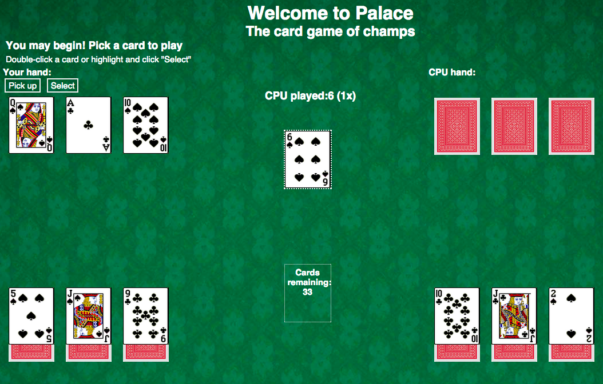
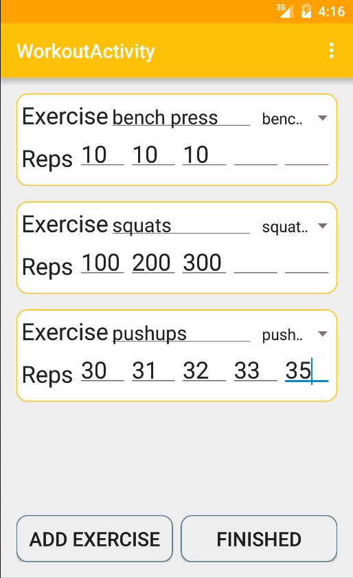
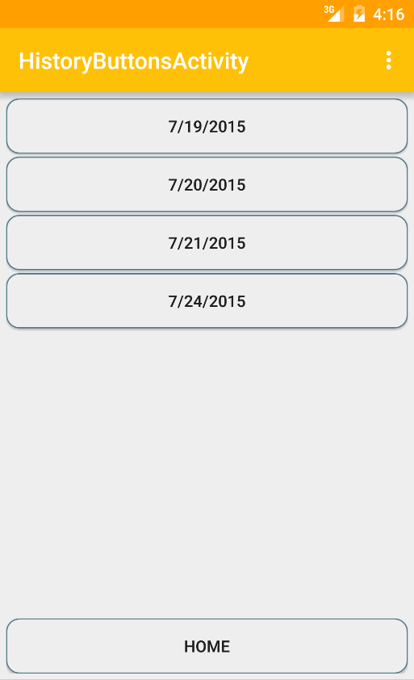
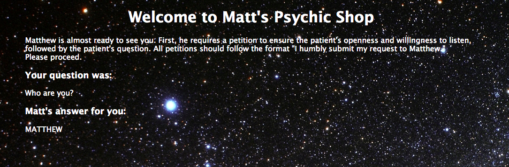

Matthew Chinn
Welcome to my personal website!
Who am I?
My name is Matthew. I am a second year Computer Science major at the
University of California, San Diego. I enjoy drumming, guitaring, and
exercising, and cheering along those Los Angeles Angels of Anaheim and
San Diego Chargers.
Matthew K. Chinn
Education
University of California, San Diego
Major: Computer Science Minor: Economics
Total GPA: 3.8
Relevant Courses (*to be completed by end of school year):
- AP Computer Science (High School)
- Introduction to Computer Science: Java (Accelerated
Pace)
- Software Tools and Techniques Laboratory
- Discrete Mathematics
- Basic Data Structures and Object-Oriented Design
- Mathematics for Algorithms and Systems
Technical Skills
Proficient in:
- Java
- HTML
- CSS
- Javascript
- Vim/Gvim
Experience in:
- jQuery
- XML (for Android)
- Git
- Bash/Shell Scripting
Work Experience
Digital Media Academy, July 2015
- Assisted an instructor at a technology camp for children
- Provided one-on-one instruction to students in need
- Led breaktime activities and supervised during lunch
Skills: Patience, understanding
Ren Asian Bistro, January-March 2014
- Took orders, delivered food, bussed tables
- Intermediated between customers and Chinese-speaking chefs, despite
not speaking Chinese
Skills: Verstile, quick learner, communication
Leadership
Finance Chair, January-March 2015
- Alpha Phi Omega pledge board
- Led a committee with a co-chair
- Fundraised $1000+ within around 5 weeks
Building Representative, 2014-2015
- Residence Hall Council
- Programmed events for students
Link Crew, 2013-2014
- Led orientation for a group of incoming high school freshmen
Skills: Leadership, responsibility, relationship building,
teamwork
Service
Tutoring, January-March 2015
- Volunteered at the Preuss School, a transformative school for
under-privileged children
- Worked with kids individually to understand math topics
Alpha Phi Omega, 2015-Present
- National, co-ed community service fraternity based on the Boy Scouts
of America
- Volunteered 15+ hours service per academic quarter
- Services included soup kitchens, food delivery, fruit picking
Minnesota Mission Trip, Summer 2015
- Built a wheelchair ramp, constructed a chicken coop, created food
packages
Skills: Considerate, hard-working, mentoring
Samples of My Work
Palace
A computer version of a card game I enjoy playing

Gym Log
A simple Android app I made to help people document their
workouts


Matt's Psychic Shop
My version of "Peter Answers," a popular online psychic.
